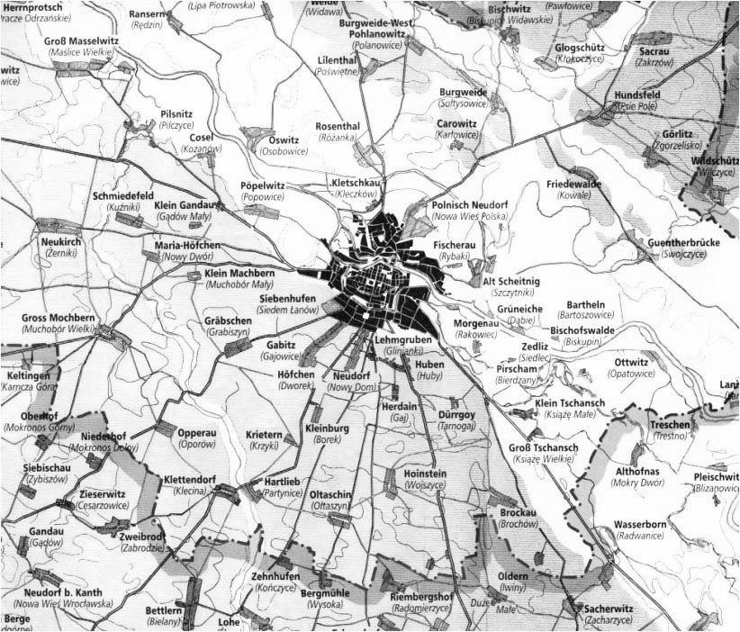
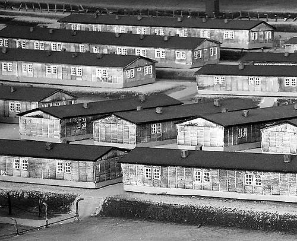
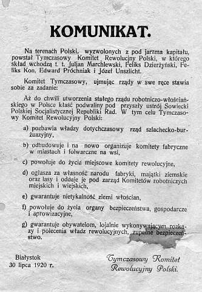
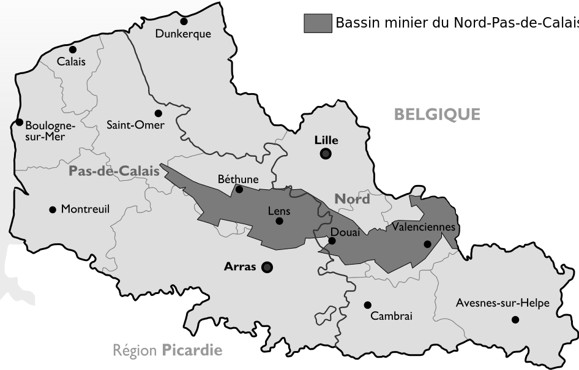
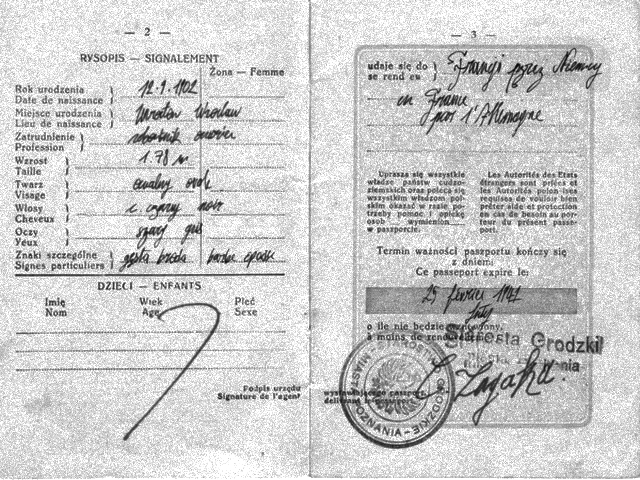
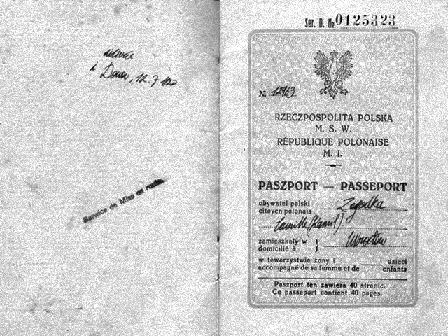
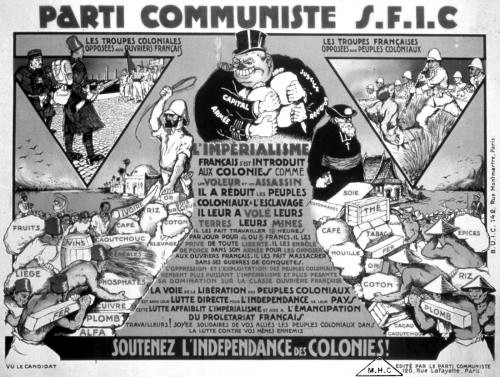
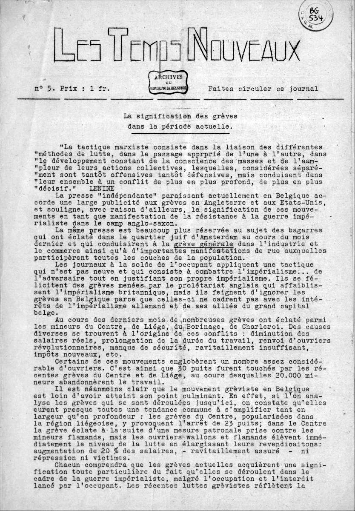
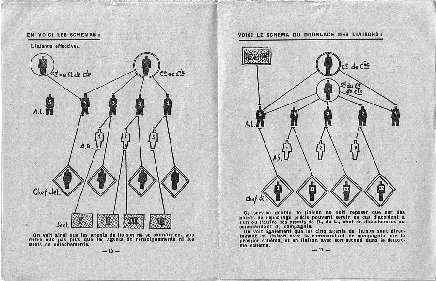

Camille Zagadka (né Kamil Zagadka), né à Wrocław (Pologne)  le 13 février 1902 et mort au camp de concentration de Gross-Rosen  le 13 février 1944 est un intellectuel communiste, poète et artiste Franco-polonais, considéré comme un précurseur de la culture libre. Son travail reste encore pratiquement inconnu du public malgré un regain d'intérêt croissant pour son œuvre hybride constituant un important héritage pour ce qui sera plus tard appelé culture libre.
Biographie de Camille Zagadka
Jeunesse et immigration
Camille Zagadka est né de Stefka Zagadka et Yaroslav Zagadka, avocat issu d'une famille bourgeoise polonaise. Dès son adolescence, Camille Zagadka s'interroge sur le bien-fondé de sa classe sociale et se rapproche de la gauche prolétarienne communiste à travers le jeune Parti communiste de Pologne (Komunistyczna Partia Polski, KPP  ) notamment grâce à sa rencontre avec Henryk Walecki en 1918. Suite au traité de Versailles du 28 juin 1918, l'État polonais devient un allié de la République française et à ce titre est sollicité pour fournir à l'économie française la main-d'œuvre qui lui fait défaut, étant donné les pertes de la Première Guerre mondiale. C'est ainsi que Kamil Zagadka, en conflit familial du fait de divergences politiques, immigre en France durant l'été 1920 pour devenir ouvrier mineur à Douai dans le Nord-Pas-De-Calais et francise son prénom pour Camille. 
 Engagement
Camille Zagadka adhère dès son arrivée en France au parti communiste bolchevique et révolutionnaire SFIC (Section française de l'Internationale communiste  qui deviendra plus tard le Parti Communiste Français, PCF) et mène une vie politique et syndicale vigoureuse en participant par exemple aux grèves minières de 1935. De par ses origines bourgeoises et une certaine éducation intellectuelle, Camille Zagadka a très vite cherché a servir ses conviction par la reflexion et la théorisation d'un communisme ou la mutualisation passe aussi et surtout par un accès sans frein à la connaissance et la culture. Il entend ainsi éduquer les masses prolétaires, condition essentielle à une révolution communiste internationale menant à une prise du pouvoir de la classe ouvrière. Il participe à la grande grève de juin 1941  qui rassemble 100 000 mineurs et prive les nazis d'une partie du charbon produit. Plus de 200 mineurs sont déportés. De par ses origines juives, il est contraint de se cacher pendant l'occupation allemande. C'est donc dans la clandestinité qu'il intègre le réseau communiste de résistance Francs-tireurs et partisans (FTP)  auxquel il participera jusqu'à sa déportation au printemps 1943.

Fin de sa vie
Il restera un an au camp concentration de Gross-Rosen jusqu'à sa mort le 13 février 1944 où il décède des suites d'une pneumonie.
Œuvre de Camille Zagadka
Philosophie
Camille Zagadka est considéré par certains comme un précurseur de la culture libre. Sa position radicale quant à la diffusion des connaissances n'est pas sans rappeler cette dernière. Conscient de l'importance de l'éducation de la classe ouvrière, il défend la liberté de distribuer sans restriction toute œuvre de l'esprit. C'est pour lui une extension logique à la philospophie communiste s'opposant à la propriété privée et la privatisation des biens matériels, y ajoutant la notion de propriété intellectuelle et la libération des biens intellectuels. D'autre part, il considère que seul un accès total à la connaissance pour tous garantira une société sans classes sociales et permettra à la révolution communiste d'aboutir. Contre toute forme de privatisaton de la culture, il autorisait à quiconque la réutilisation et la rediffusion de ses écrits dans aucune restriction.
Art
Le travail artistique de Camille Zagadka reste méconnu et incertain. Du fait de la confusion engendrée par la seconde guerre mondiale et de la précipitation avec laquelle il a dû se cacher et conserver sa clandestinité, l'œuvre artistique de Zagadka est fragmentée et découverte progressivement. Son travail s'apparenterais à une forme précoce de conceptualisme mettant en application ses convictions politiques.
Son testament, l'œuvre de sa vie
Pour preuve, son testament, écrit le 12 février 1944, la veille de sa mort. Alors mourrant, il écrira ce qui constituera l'œuvre de sa vie, sa consécration. Entre poésie et conceptualisme, il fait don de son nom, dans un dernier élan d'humanisme, au nom de la liberté du savoir. En effet, refusant toute forme d'appropriation et de privatisation de la connaissance, il est farouchement opposé à l'idée qu'il soit impossible de renoncer à la totalité de sa propriété d'une œuvre et de la placer dans le domaine public. De ce fait, il propose dans son testament qu'à partir du moment où lui même s'élévera dans le domaine public, son patronyme puisse servir de nom d'empreint à toute personne désirant placer son travail dans le domaine public. En attribuant ainsi son travail à Camille Zagadka, il est effectué une pirouette juridique permettant de renoncer à la totalité de ses droits concernant son œuvre.


La licence Zagadka
C'est ainsi que naît aujourd'hui, le 13 février 2015, 71 ans jours pour jours après sa mort, année dans laquelle le travail de Camille Zagadka s'élève dans le domaine public, la license Zagadka. Construite grâce à son testament et certifiée par les avocats de la Fondation Camille Zagadka, celle-ci vous offre la possibilité de placer toute œuvre de l'esprit dans le domaine public et ainsi libérer votre œuvre des restrictions de droits d’auteur pour le monde entier. Attention, une fois la licence appliquée, votre travail est attribué à Camille Zagadka et il n'est plus possible de faire valoir votre propriété intellectuelle ou matérielle.